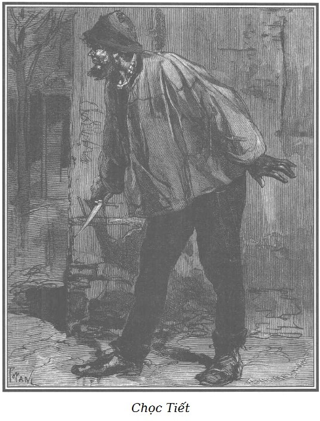

Hẳn bạn đọc chưa quên hai người khách trong quán bị một người thứ ba theo dõi chăm chú. Đặc biệt người đội mũ Hy Lạp luôn che giấu bàn tay trái và đã khẩn khoản hỏi mụ chủ quán tại sao Thầy Đồ chưa đến. Khi Sơn Ca kể chuyện, họ nhiều lần thầm thì với nhau và bồn chồn nhìn ra cửa.
Người đội mũ Hy Lạp nói với đồng bọn:
– Lão Thầy Đồ đếch tới, miễn sao chiến hữu của lão đừng xóa sổ lão để giật phần.
– Nếu thế thì phèo mất công ta tăm vụ đánh quả. – Tên kia nói. Người khách vào sau cùng vẫn chú ý hai người kia. Nhưng ông ta ngồi hơi xa để nghe được câu nói cuối cùng của họ. Sau nhiều lần khéo léo xem lại một mảnh giấy nhỏ kẹp kín trong mũ kết, người đó có vẻ hài lòng về những nhận xét của mình. Ông ta ra khỏi bàn và nói với mụ chủ quán đang ngủ gà ngủ gật sau quầy, chân kề bếp lò, con mèo trên ghế:
– Này, mẹ Ponisse, tôi sẽ trở vào ngay, trông hộ bình rượu và đĩa thức ăn nhé, kẻo lũ bợm ních hết.
– Ông mãnh yên tâm, nếu bình đã cạn, đĩa đã nhẵn thì chẳng có ai đến đâu.
Người đó phá lên cười tỏ ra hiểu câu nói khôi hài của mụ Ponisse và rút êm.
Trước khi cửa đóng lại, Rodolphe đã kịp nhìn ra phố thấy bộ mặt lấm lem và thân hình đồ sộ của người bán than.
Rodolphe tỏ thái độ bực bội trước sự theo sát bảo vệ của người bán than. Người này biết vậy nhưng vẫn không rời xa quán rượu.
Rượu mạnh không khiến Sơn Ca vui vẻ hơn, trái lại càng ủ rũ hơn. Cô ngồi tựa vào tường, đầu gục xuống, đôi mắt to và xanh lơ đãng nhìn quanh với những ý nghĩ xót xa dồn dập. Cô không nhận thấy vẻ quan tâm đặc biệt của người cứu mình, chỉ ân hận chưa đền đáp được gì và gần như lấy làm tiếc là đã kể chuyện đời mình quá thành thật.

.Chọc Tiết trái lại rất vui. Món thập cẩm, vang và rượu mạnh đã khiến y cởi mở, quên cả nỗi xấu hổ vì bị quật ngã. Y thấy Rodolphe trên tài mình rất xa nên từ xấu hổ chuyển sang ngưỡng mộ, sợ sệt, tôn trọng. Không biết hằn thù, thú nhận thành thật là đã giết người và đã bị trừng phạt đích đáng, tự hào không bao giờ thèm trộm cắp, y tuy phạm tội ác nhưng chưa đến nỗi chai sạn.
Khía cạnh đó không thoát khỏi sự nhận xét minh mẫn, tinh tế của Rodolphe. Nhiều tham vọng và cũng hiếu thắng như một số người, Rodolphe nôn nóng có ngay một cuộc chạm trán với Thầy Đồ, mà ông tin là có thể chiến thắng. Vì thế, ông cố thôi thúc để Chọc Tiết đi ngay vào câu chuyện, cho đỡ bồn chồn.
– Nói đi cậu, chúng tôi nghe đây. – Rodolphe giục Chọc Tiết.
Y tợp nốt cốc rượu và bắt đầu:
– Sơn Ca, cô chỉ là cô bé đáng thương. Ít nhất cô em còn được mụ Vọ nhặt về. Đem mà tống mụ xuống địa ngục. Cô em còn có chỗ trú chân cho đến khi bị bắt vào tù. Còn tao, tao không nhớ có lúc nào tao được ngủ trên giường không, cho đến năm mười chín tuổi, vừa đúng tuổi đi lính.
– Anh đã từng đi lính à? – Rodolphe hỏi.
– Vâng, ba năm, nhưng đó là chuyện về sau. Đã ở Viện bảo tàng Louvre, những lò nung thạch cao ở Clichy và những công trường ở Montrouge, đấy là những khách sạn của tôi thời trai trẻ. Ông biết không, tôi đã từng có cơ ngơi cả ở Paris, cả ở nông thôn.
– Lúc đó anh làm nghề gì?
– Tôi nhớ mang máng lúc nhỏ, tôi chỉ là đứa trẻ lẽo đẽo đi theo ông lão nhặt giẻ rách thường nện tôi bằng cái que cời. Chẳng thế thì sao, sau này mỗi khi thấy người đeo giỏ mây đan và que cời như hình thần Ái tình Cupidon là tôi cứ muốn nhảy xổ vào mà nện. Vốn trước kia bọn người nhặt giẻ thường hay bắt nạt tôi mà! Nghề đầu tiên của tôi là phụ việc cho những người hàng thịt chọc tiết ngựa ở Montfaucon. Lúc đó tôi mới mười hoặc mười hai tuổi. Lần đầu tiên chọc dao bầu vào những con vật già khốn khổ, tôi thấy ghê tay. Sau một tháng, tôi không nghĩ đến nữa, tôi thấy quen nghề. Không ai có đường dao bén ngọt như của tôi… Cái đó làm cho tôi rất khoái. Xong việc người ta ném cho tôi một miếng thịt ngựa để trả công, còn tất cả thịt đều đem bán cho bọn lái buôn bịp bợm ở phố Trường Y, người ta chế biến thành thịt bò, thịt bê, thịt dã thú theo sở thích của khách hàng. Có miếng thịt ngựa, tôi thấy mình sướng hơn vua. Ít ra là như thế! Tôi chạy ngay về lò nung thạch cao, rồi như con sói đói về hang, được sự cho phép của người đốt lò, tôi làm món quay hết ý. Khi lò không đốt, tôi nhặt củi khô ở Romainville, nhóm lửa và quay thịt trong góc một bức tường của lò mổ. Thế đấy, nửa chín, nửa tái, không có món gì khác.
– Trước đây tên anh là gì? – Rodolphe hỏi.
– Tóc tôi hoe hoe nhạt hơn bây giờ, mắt lúc nào cũng vằn đỏ, vì thế người ta gọi tôi là Bạch Tạng. Bạch Tạng là con thỏ trắng có đôi mắt đỏ.
– Thế còn cha mẹ, gia đình?
– Cha mẹ tôi ư? Cũng cùng một số nhà như cha mẹ Sơn Ca. Nơi sinh ư? Góc phố của bất kỳ con đường nào, cột vòi nước bên phải hay bên trái, ngược hay xuôi dòng chảy.
– Anh oán giận cha mẹ đã bỏ rơi anh sao?
– Việc đó không liên quan gì đến ai… nhưng dù sao các cụ vẫn xỏ tôi, cho tôi ra đời… Nhưng tôi không muốn nói nhiều về điều đó. Các cụ đã làm như Thượng đế đáng lẽ phải an bài cho dân nghèo. Vì Người có mất gì đâu, và cũng chẳng buộc người nghèo chúng tôi phải trả giá để được lương thiện…
– Anh đói, anh rét và anh không trộm cắp phải không?
– Không. Mặc dù tôi khổ! Đôi khi tôi phải nhịn đói nhiều ngày liền, nhưng những lần như thế, tôi không bao giờ trộm cắp.
– Anh sợ vào tù à?
– Ồ! – Chọc Tiết thốt lên, nhún vai và cười to. – Tôi đã không ăn cắp vì sợ sẽ có cơm ăn. Lương thiện, tôi chết đói, ăn cắp, người ta sẽ nuôi tôi trong tù. Không, tôi không trộm cắp vì… vì tôi không hề có ý muốn ăn trộm.
Câu trả lời rất hay đó đã khiến Rodolphe ngạc nhiên hết sức. Một người nghèo khổ mà giữ được lòng lương thiện trong muôn vàn thiếu thốn gieo neo thì thật đáng kính trọng gấp bội. Vì sự trừng phạt tội phạm lại có thể trở thành người nuôi sống chắc chắn cho họ. Rodolphe bèn đưa tay ra cho con người khốn khổ thô lỗ, cục cằn của cái xã hội được coi là văn minh, con người mà sự nghèo hèn không tha hóa nổi.
Chọc Tiết ngạc nhiên và kính nể nhìn người khoản đãi mình, khó khăn lắm mới dám đụng đến bàn tay chìa ra cho mình bắt. Y cảm thấy giữa mình và Rodolphe là cả một hố sâu ngăn cách.
– Tốt, tốt! – Rodolphe nói. – Anh vẫn còn lương tâm và danh dự.
– Thực tâm tôi chẳng hiểu gì cả – Chọc Tiết cảm động – những lời ông nói với tôi, tôi chưa bao giờ được nghe cả. Chưa bao giờ tôi cảm thấy như thế này… Ông đã quật ngã tôi, thế nhưng ông lại cho tôi ăn và ông nói với tôi những lời mà… thế là đủ, từ nay tôi sẽ trung thành với ông đến trọn đời. Ông hãy tin ở thằng Chọc Tiết này.
Rodolphe không muốn biểu lộ niềm xúc động của mình.
– Anh làm nghề phụ đồ tể có lâu không?
– Khá lâu. Ban đầu tôi rất ngán nhưng sau khi thấy hay hay, tới tuổi thành niên, tôi làm việc như điên và tôi say mê chọc tiết đến quên cả ăn. Phải nhìn thấy lúc tôi làm việc mới biết. Giữa mười lăm, hai mươi con ngựa đang chờ đến lượt. Chà! Chà! Tôi như lên con điên. Tôi cởi trần trùng trục, tai ù ù, tay cầm con dao to và tôi đâm… Tôi đâm cho đến khi con dao rời khỏi tay. Trời ơi! Thật khoái, có làm ra tiền triệu tôi cũng không khoái bằng nghề này.
– Có phải vì thấy máu mà anh nhiễm phải thói quen đâm chém không?
– Có thể. Tôi nhớ có lần thói tật ấy khiến tôi nổi khùng thật sự và làm hỏng công việc. Tôi làm hỏng cả các tấm da vì tôi đâm lung tung. Cuối cùng người ta đuổi tôi khỏi lò mổ. Bệnh thích đâm chém cũng nhạt đi, tôi muốn tìm nghề khác. Tôi muốn xin việc làm ở hàng xeo, nhưng, lầm quá đi thôi, họ làm cao, coi khinh tôi như anh thợ chuyên đóng ủng khinh anh thợ sửa giày. Không tìm được việc làm, tôi thường phải nhịn đói. Về sau tôi làm việc tại công trường đá ở Montrouge. Được hai năm, bực mình vì chỉ loanh quanh với trục đá đến phát chán để được mỗi ngày hai mươi xu, cao lớn, mạnh mẽ, tôi đăng lính. Người ta hỏi tên và giấy tờ của tôi. Tên tôi ư? Bạch Tạng. Tuổi ư? Nhìn râu tôi đây. Giấy tờ ư? Đây, chứng chỉ của ông chủ mỏ đá. Tôi nói tôi có thể làm một pháo thủ tốt, thế là người ta cho tôi nhập ngũ.
– Với sức khỏe và lòng can đảm, nếu lúc đó có chiến tranh, có thể anh sẽ thành sĩ quan.
– Trời đất ơi! Tôi biết thừa đi rồi. Đâm bọn Anh hay bọn Phổ* chắc phải thích hơn đâm những con ngựa già… Nhưng không may là không có chiến tranh mà lại có kỷ luật. Nếu người học việc gây sự với ông chủ, được thôi, nếu yếu anh ta bị ăn đòn, nếu khỏe, đánh được thì anh ta bị đuổi, đôi khi còn bị tống giam. Nhưng trong quân đội lại là chuyện khác. Một hôm người đội trưởng xô tôi vì tôi không thực hiện mệnh lệnh. Hắn có lý, vì tôi lười. Bực mình, tôi kháng cự, hắn xô tôi, tôi xô lại. Hắn nắm cổ tôi, tôi quay lại. Mọi người ùa vào túm lấy tôi làm tôi hăng máu, sẵn dao trong tay, tôi đang làm bếp mà, tôi đâm hắn, đâm bị thương hai người lính khác nữa. Đúng là một cuộc tàn sát, mười một nhát dao cho ba người. Máu lênh láng như ở lò mổ.
Vương quốc Phổ là một vương quốc trong lịch sử Đức, tồn tại từ năm 1701 đến 1918, cho đến khi nước Đức bị đánh bại tại Chiến tranh thế giới thứ nhất.
Chọc Tiết cúi đầu, ảo não rồi lặng im.
– Lúc này anh đang nghĩ gì thế? – Rodolphe hỏi và thấy hay hay khi quan sát y.
– Tôi quên không nói là khi tại ngũ tôi đã từng cứu hai người bạn suýt chết đuối trên sông Seine khi chúng tôi đóng quân ở Melun. Và một lần khác tôi đã cứu được một bà già khỏi bị lửa thiêu trong một vụ cháy nhà khủng khiếp. Đáng lẽ phải lên máy chém, người ta hạ án tôi xuống khổ sai, lão thầy cãi ra sức múa tay quay lưỡi đã chuyển được án cho tôi. Khi biết không bị xử tử nữa, cử chỉ đầu tiên của tôi là muốn nhảy đến bóp cổ lão thầy cãi, ông hiểu tại làm sao chứ?
– Anh tiếc vì được giảm nhẹ tội ư?
– Vâng, giết người đền mạng, như thế mới đúng, trộm cắp thì tra chân vào cùm, tội nào án ấy. Nhưng buộc anh phải sống khi anh đã giết người thì bọn quan tòa nào có hiểu được bọn sát nhân chúng tôi phải chịu đựng như thế nào trong những buổi đầu đâu!
– Anh hối hận à, Chọc Tiết?
– Hối hận, không, dù sao tôi cũng đã mãn hạn tù, tuy nhiên không có đêm nào mà tôi không bị những cơn ác mộng ám ảnh. Tôi gặp lại người đội trưởng và những người lính bị tôi đâm. Mà đâu có phải chỉ một mình họ – Chọc Tiết rùng mình – có đến hàng chục, hàng trăm, hàng vạn người chờ đến lượt mình bị đâm như khi tôi giết ngựa ở Montfaucon. Tôi thấy điên lên, tôi chọc tiết họ như trước kia tôi chọc tiết những con ngựa. Nhưng càng đâm họ lại càng đến nhiều hơn, và trong khi chết họ nhìn tôi dịu dàng biết bao nhiêu, dịu dàng đến nỗi tôi tự nguyền rủa mình đã giết họ nhưng tôi không thể ngừng lại được. Nào đã hết đâu… Tôi chưa bao giờ có anh em, trong khi đó những người tôi cứa cổ đều lại là anh em bè bạn… Những người anh em mà tôi sẵn sàng nhảy vào lửa để cứu họ. Khi không chịu được nữa, tôi thét lên và tỉnh dậy, toát mồ hôi lạnh cóng như tuyết tan.
– Giấc mơ dữ dội thật!
– Ồ vâng! Thật thế! Thời gian đầu bị giam, đêm nào tôi cũng nằm mơ như thế. Ông biết không, chính vì vậy mà tôi muốn hóa điên hóa dại. Chẳng thế mà đã hai lần tôi tìm cách tự sát. Một lần tôi uống gỉ đồng, lần khác tôi thắt cổ bằng một sợi xích. Nhưng tôi khỏe như con bò mộng. Gỉ đồng chỉ làm tôi khát nước ghê gớm, còn sợi xích chỉ để lại một vết hằn như chiếc cà vạt xanh tự nhiên. Nhưng rồi khát vọng sống đã thắng, những đêm ác mộng giảm dần, tôi trở lại bình thường như những người khác.
– Trong tù tha hồ sẵn thầy bạn mà học nghề của bọn trộm cướp, thế mà vượt qua được mọi cám dỗ à?
– Vâng, đúng thế. Tôi ghét gian lận, lừa đảo và trộm cắp. Cũng vì vậy những tay trộm cắp thường giễu cợt tôi, tôi đã lấy xích vụt chúng cứng họng. Tôi đã gặp lão Thầy Đồ trong một trận nện xích như vậy, nhưng lão đã cho tôi nếm một trận nên thân, như ông ấy.
– Đấy là một người tù mãn hạn phải không?
– Lão là tên tù chung thân nhưng đã vượt ngục.
– Và lão vẫn lẩn tránh? Sao không ai tố cáo lão?
– Tất nhiên người tố cáo lão không phải là tôi – tôi sợ lão.
– Sao mật thám không phát hiện ra được, hay là không có dấu vết nhận dạng của lão?
– Dấu vết nhận dạng à! Khó đấy! Từ lâu lão đã xóa trên mặt những nét mà Chúa an bài. Bây giờ chỉ có thánh mới nhận ra Thầy Đồ thôi.
– Lão xóa bằng cách nào?
– Đầu tiên lão xóa bớt cái mũi quá dài, thêm vào đó lão bôi acid lên mặt.
– Anh không đùa đấy chứ?
– Nếu tối nay lão đến, ông sẽ thấy. Trước đây mũi lão dài khoằm như mỏ vẹt, bây giờ thì tẹt hẳn, đây là chưa kể đôi môi phồng to như nắm tay và cái mặt xanh ô liu chằng chịt sẹo như áo vá.
– Như thế thì khó nhận ra thật.
– Lão trốn khỏi ngục Rochefort* đã được sáu tháng. Cớm gặp lão hàng trăm lần mà vẫn không nhận ra lão.
Nơi giam giữ tù khổ sai.
– Sao lão bị tù khổ sai?
– Lão làm bạc giả, ăn trộm và giết người. Người ta gọi lão là Thầy Đồ bởi chữ lão rất đẹp và lão cực kỳ thông thái.
– Lão là kẻ đáng sợ lắm phải không?
– Lão sẽ không còn đáng sợ nếu như ông quật lão như đã quật tôi. Trời đất ơi! Được thấy thế thì tôi khoái biết mấy!
– Hiện nay lão làm gì để sống?
– Lão khoe cách đây ba tuần lão đã trấn lột và giết một người lái bò trên đường Poissy.
– Sớm hay muộn rồi người ta cũng tóm được lão thôi.
– Phải có từ hai người trở lên, rất can đảm mới làm được việc đó, lão luôn thủ trong áo choàng hai khẩu súng ngắn đã nạp đạn và một con dao găm. Lão thường nói, máy chém chờ lão, có chết chỉ chết một lần. Lão sẽ giết tất cả, để chạy trốn. Ái chà, lão không thèm giấu điều đó đâu. Lão khỏe gấp đôi ông và tôi, hạ lão khó lắm.
– Anh làm nghề gì sau khi mãn hạn tù?
– Tôi đã xin việc với chủ thầu xếp dỡ hàng ở cảng Saint-Paul và nhờ đấy mà sống.
– Nhưng tại sao đã không trộm cắp mà anh lại sống trong Nội Thành?
– Vậy ông muốn tôi sống ở đâu? Ai thích gì cái việc tiếp xúc với một tên tù mãn hạn. Với lại sống một mình tôi buồn lắm. Tôi thích chỗ đông người, ở đấy tôi sống với những người cùng cảnh ngộ. Tôi có ẩu đả đôi lần… Trong Nội Thành, người ta sợ tôi như cọp, cảnh sát cũng chẳng làm gì tôi ngoài một vài lần phạt giam tôi hai mươi tư giờ vì tội đánh nhau.
– Mỗi ngày anh kiếm được bao nhiêu tiền?
– Ba mươi lăm xu một ngày, mạnh chân khỏe tay thì cứ thế mà kéo, còn yếu đi, tôi lại cầm cái thuốn và cái giỏ như ông già nhặt giẻ rách mà hình ảnh đã từng in đậm nét trong ký ức tuổi thơ của tôi.
– Anh có bao giờ thấy khổ không?
– Không. Tôi biết còn nhiều người khổ hơn tôi. Nếu không thường thấy người đội trưởng và những người lính bị tôi đâm đêm đêm trong giấc ngủ, tôi có thể nhắm mắt bình yên ở một xó xỉnh nào đó hoặc ở bệnh viện làm phúc như mọi người khác. Nhưng cơn ác mộng ấy… Thôi, còn nghĩa lý gì nữa mà phải nhắc đến.
Câu chuyện của Chọc Tiết khiến Sơn Ca thẫn thờ trong đau đớn mơ màng.
Rodolphe cũng vậy, im lặng suy nghĩ. Câu chuyện của hai người gợi lên trong ông những dự kiến mới.
Một sự cố bi thảm xảy đến khiến cả ba người sực nhớ họ đang ở chỗ nào.